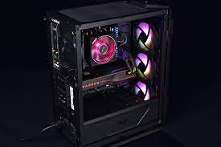
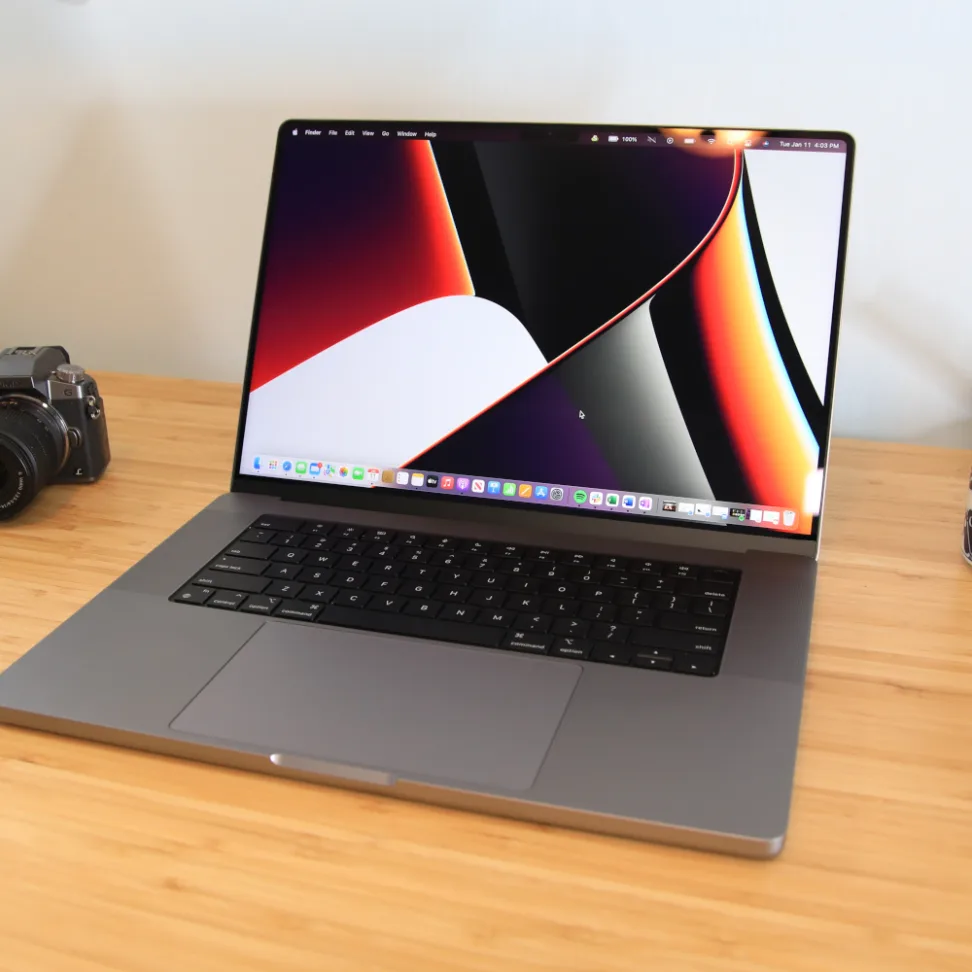
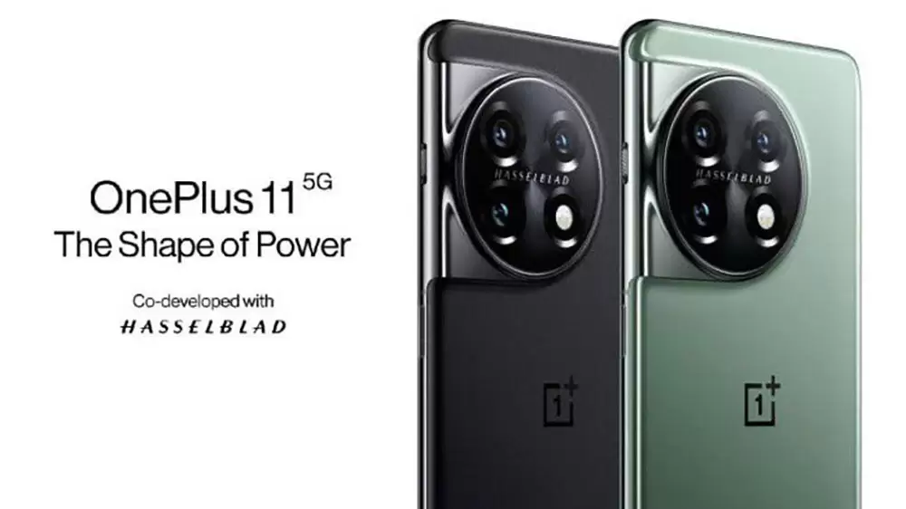

Alışveriş Sitem
Ürünlerimiz
ASUS TUF Gaming GT501
Fiyat : 12.999₺
kredi kartına 12 ay taksit imkanı
Metal ön panel, temperlenmiş camdan yan panel, 120 mm RGB fan, 140 mm PWM fan, radyatör için ayrılan alan ve USB 3.1 Gen 1'e sahip olan ASUS TUF Gaming GT501 kasa, EATX'e kadar destek veriyor. • Fark edilmesi için tasarlandı: Özel TUF Gaming desenine sahip metal ön panel ve sisteminizin görülmesini sağlayan 4 mm kalınlığında, isli ve temperlenmiş cam yan panel. • Mobil savaş istasyonu: Ergonomik, pamuk dokumalı taşıma kollarıyla 30 kg’a kadar kolay taşıma imkanı. • Verimli soğutma: Üç adet 120 mm Aura Sync RGB aydınlatmalı fan, bir adet 140 mm arka PWM fan ve hedefli hava akımı için yedi adet fan montaj noktası. • Hem öne hem arkaya monte edilen 360 mm su soğutma radyatörü ve arka tarafta 140 mm radyatör için ayrılan alan. • TUF Gaming anakartlar için mükemmel: Fan ve kablo yerleşimi TUF Gaming araçları için optimize edildi. Fan Xpert 4 yazılımıyla mükemmel soğutma kontrolüne hazır.
APPLE Macbook Pro
Fiyat : 25.999₺
Aşırı hızlıdan da hızlı. M1 Max, bir profesyonel dizüstü bilgisayar için inanılmaz güçlü bir çip. 10 adede kadar CPU çekirdeğine, 32 adede kadar GPU çekirdeğine ve 16 çekirdekli Neural Engine’a sahip. M1 Pro’ya kıyasla iki kat daha hızlı grafik işleme performansı ve iki kat daha yüksek bellek bant genişliği sunuyor. Ayrıca kod çözme için bir adet ve kodlama için iki kata kadar daha hızlı video kodlayabilen iki adet özel media engine içeriyor. Ve iki adet ProRes hızlandırıcısı sayesinde daha da yüksek çoklu akış performansı sağlıyor.
Oneplus 11 Pro
Fiyat : 11.000 ₺
OnePlus 11'in OLED ekranı, QHD+ çözünürlüğe ek olarak 120 Hz tazeleme oranı sunuyor. Telefonun selfie kamera çözünürlüğü ise 16 MP olarak açıklandı. Yapay zeka ile desteklenen bu ön kamera, 720p ve 1080p videolar için 60 fps destek veriyor. OnePlus 11'in diğer teknik özelliklerine baktığımızda bu akıllı telefonun Qualcomm Snapdragon 8 Gen 2'den güç aldığını görüyoruz. Ayrıca 16 GB'ye kadar RAM ile de desteklenecek. "UFS 4.0" depolama alanı teknolojisiyle desteklenecek telefonun 5.000 mAh kapasiteli bataryasının 100W hızlı şarj desteği sunacak. Android 13 tabanlı OxygenOS 13.1 arayüzü ile gelecek amiral gemisi telefon, tam 4 Android güncellemesi alacak.
APPLE Iphone 14 Pro Max

Fiyat : 28.999 ₺
6.7 inç iPhone 14 Pro Max ve 6.1 inç iPhone 14 Pro, geçen seneki 13 Pro serisi ile kıyaslandığında, donanımsal olarak da geliştirilmiş iPhone Pro modelleri olarak karşımıza çıkıyor. Apple, ilk 10 gigabit 5G modemi (Qualcomm Snapdragon X65) iPhone 14 Pro modellerinde kullanıyor. iPhone 14 Pro serisini en güçlü akıllı telefon yapan A16 Bionic çip de unutulmamalı. Şimdi dilerseniz, Apple etkinliğinin yıldızları iPhone 14 Pro serisine daha yakından bakalım.
iPhone 14 Pro Max, şu anda Apple’ın en iyi, en pahalı, en ilgi çekici telefonu. iPhone 14 Pro serisi, çentiğin olmadığı önemli ölçüde farklı bir tasarım (delikli ekran), kamera geliştirmeleri, always on display (her zaman açık ekran) modu dahil birçok yeniliği beraberinde getiriyor.